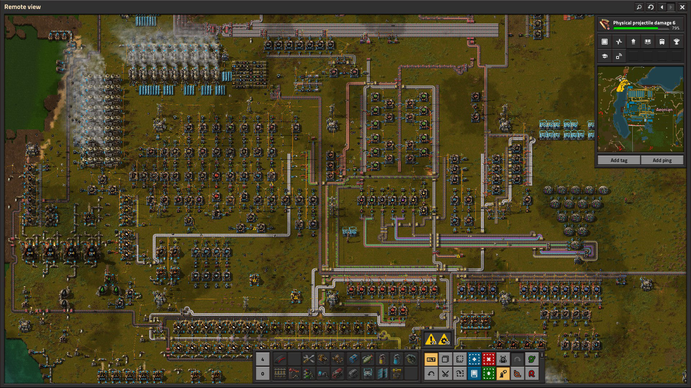

Why did I start playing this game? I can't STOP. There's always something to that needs to be done, something that needs to be more efficient, resources I'm running low on. You think to yourself "Just 30 more minutes, I'll complete everything I need for the day" - NOPE. Your factory is still inefficient. It needs to be improved, always. The factory must grow.
Once I started understanding robots, it was over. Robots take away so many frustrations experienced in the early stages of the game.
